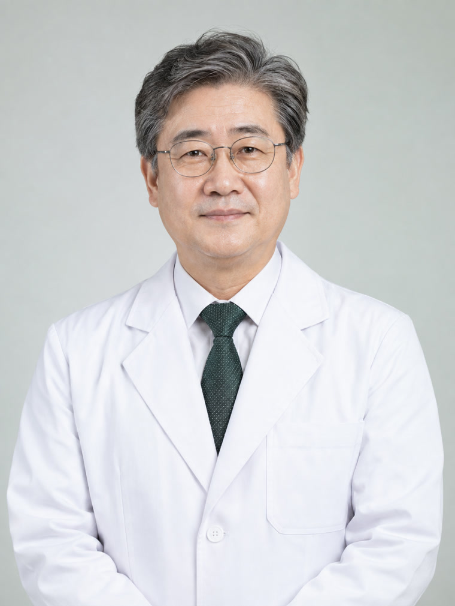
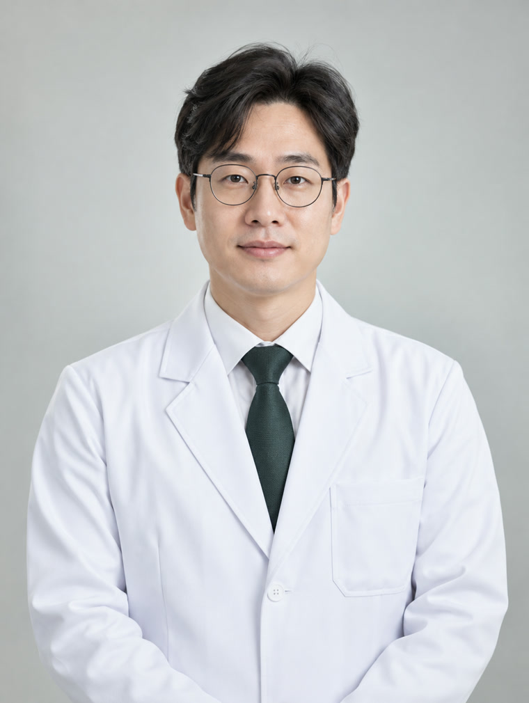

혈액내과, 한울혈액암병원장, 골수종센터, 빈혈클리닉, 혈액암가족돌봄센터
전문진료분야
급성 골수성 백혈병, 골수형성이상증후군, 조혈모세포이식, 림프종, 다발골수종

혈액내과, 림프종센터, CAR-T/세포치료센터, 이식지원센터
림프종, 다발골수종, 급성림프모구백혈병, CAR-T 세포치료, 조혈모세포이식

소아청소년과, 소아혈액종양센터, 백혈병센터, 빈혈클리닉, 혈액암가족돌봄센터
소아혈액질환(빈혈, 자반, 출혈), 림프절질환, 혈우병, 소아백혈병, 조혈모세포이식
혈액내과, 혈액건강연구소, 백혈병센터, 골수부전클리닉
급성 골수성 백혈병, 골수형성이상증후군, 조혈모세포이식, 골수부전클리닉, 재생불량빈혈
혈액내과, 백혈병센터, CAR-T/세포치료센터, 빈혈클리닉
급성림프모구백혈병, CAR-T 세포치료, 동종조혈모세포이식
혈액내과, 이식지원센터, 골수종센터, CAR-T/세포치료센터
급성골수성백혈병, 만성골수성백혈병, 조혈모세포이식, 림프종, 혈전지혈클리닉
혈액내과, 혈액건강연구소, 혈전지혈클리닉, 골수증식종양클리닉
급성 골수성 백혈병, 골수형성이상증후군, 조혈모세포이식, 혈전지혈클리닉
혈액내과, 림프종센터, 골수종센터, 골수증식종양클리닉
림프종, 다발골수종, 급성림프모구백혈병, 반일치 조혈모세포이식, 혈전지혈클리닉